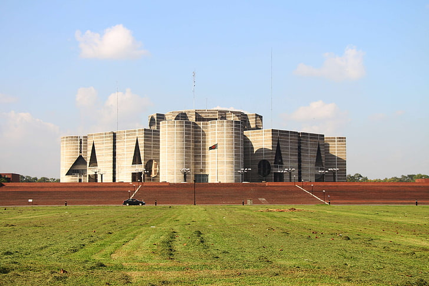
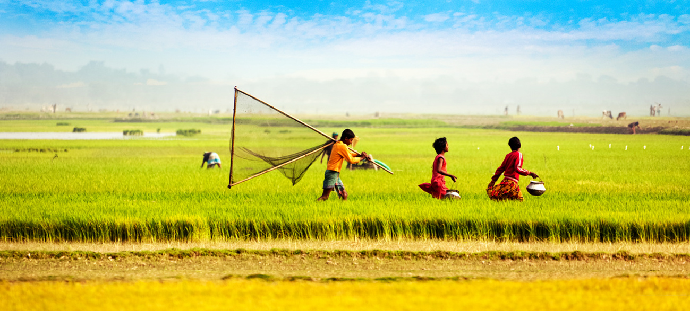

Welcome To My World
Hi! I am Md. Asif Khan from BANGLADESH, a small but potential country on the world map. I am studying Bachelor of Science (B.Sc.) in Computer Science and Engineering (CSE) from Daffodil International University(DIU), Dhaka, Bangladesh.
I am an active and enthusiastic learner and searching for a Web Developer position as an intern where I can work
in a challenging environment and gain experience in working as part of a team or individual and develop by utilizing
creative mind, programming skills and technical knowledge.I am specially interested in working in the project that
will benefit directly to the mass people.
Along with web developing, I have interest in Machine learning & Data Science.
See My Video Resume below........
Do You Know About My Country, Bangladesh??
......Let's Have A Short Tour......
Official Buildings
Old Historical Places
Natural Beauties
Tourist Spots